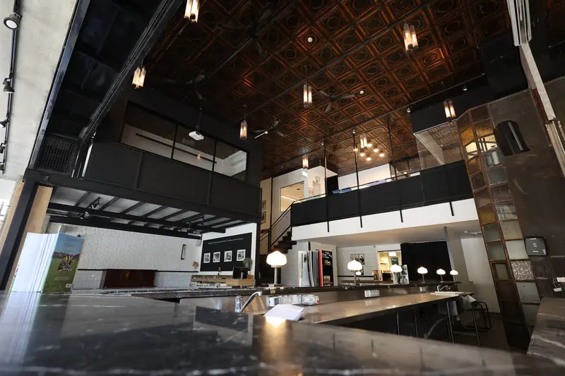
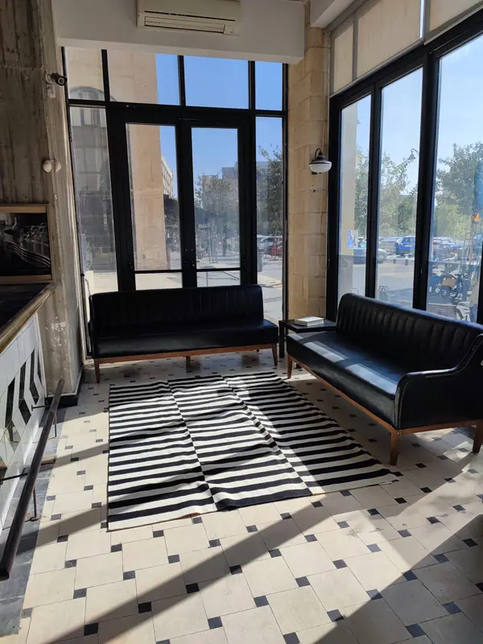
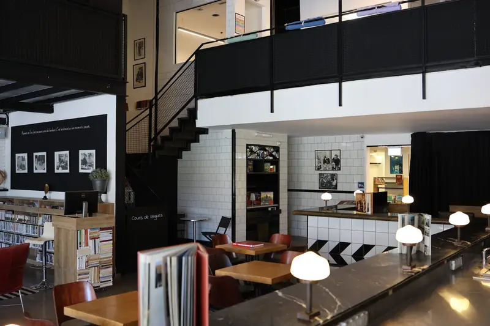

ההפנינגים
ערבים מיוחדים במספר מקומות מוגבל. הצטרפו לרשימה וקבלו את התאריכים ראשונים.
הצטרפו לרשימה ←
קפה ביסטרו רומן גארי · הלל 35 · ירושלים
ביסטרו פריזאי בתוך המכון הצרפתי רומן גארי, כשר למהדרין. מקום להיפגש, להאט ולהמשיך את השיחה.
01 / המקום
חזית כחולה ברחוב הלל, דלפק ארוך וגלריה. קפה רומן גארי חולק את כתובתו עם המכון הצרפתי — נקודת מפגש בין העיר לתרבות הצרפתית.



02 / בסרטונים
הקישו על סרטון כדי לשמוע את הקול.
03 / ערבים ואירועים
ערבים מיוחדים במספר מקומות מוגבל. הצטרפו לרשימה וקבלו את התאריכים ראשונים.
הצטרפו לרשימה ←המקום, התפריט והאווירה, מותאמים לקבוצה שלכם. שלחו תאריך ומספר משתתפים.
בדקו תאריך ←ארוחות בוקר, מנות ביסטרו ומאפים בסגנון פריזאי. סגור בשבת.
שמרו מקום ←04 / הזמנת שולחן
ממלאים את הפרטים, וההודעה נפתחת בוואטסאפ של הקפה. ההזמנה מאושרת על ידי הקפה בוואטסאפ.
שעות הפתיחה — בוואטסאפ או בטלפון 054-665-7655.
